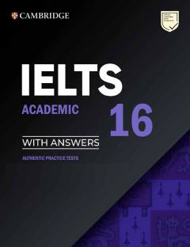

CIIELTS Academic imtihoniga tayyorgarlik ko'rish uchun rasmiy amaliy testlar to'plami.
Ushbu kitob Cambridge University Press tomonidan tayyorlangan bo'lib, IELTS Academic imtihoniga tayyorgarlik ko'rish uchun mo'ljallangan rasmiy amaliy testlarni o'z ichiga oladi. Qo'llanmada to'rtta to'liq test, javoblar kalitlari, audioskriptlar va namunaviy yozma ishlar keltirilgan. Bu talabalar va o'qituvchilarga imtihon formatini o'rganish hamda o'z bilimlarini sinash imkonini beradi.